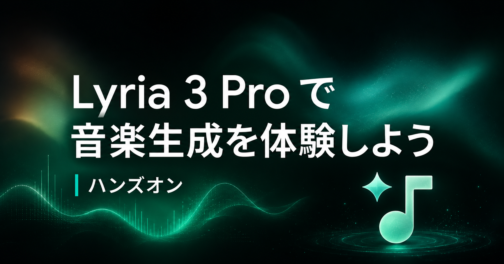
このコードラボでは、プログラミングや音楽制作の経験がない方を対象に、ブラウザだけで Lyria 3 Pro による音楽生成を体験します。
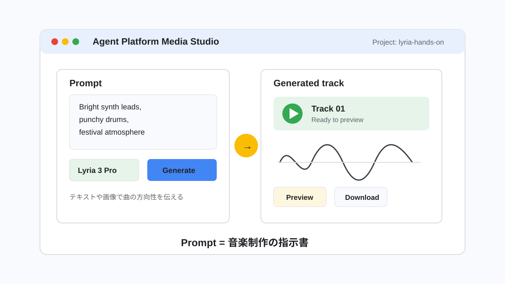
Google Cloud の Agent Platform Media Studio を使って、テキストや画像から短い音楽を生成します。最初は短い説明で作り、その後にジャンル、雰囲気、楽器、テンポなどを足して、生成結果がどう変わるかを聴き比べます。
補足: 参加者は、運営側が用意した課金有効済みの Google Cloud プロジェクトを使います。自分の Google Cloud プロジェクトでは作業しません。
このステップは、まだ参加用メールアドレスを登録していない方だけが行います。すでに登録済みの方は、次のステップへ進んでください。
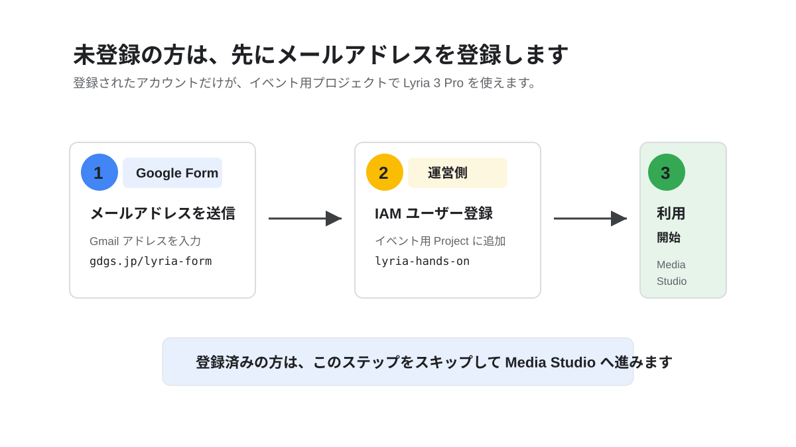
Media Studio で Lyria 3 Pro を使うには、運営側が用意した Google Cloud プロジェクト lyria-hands-on に、参加者の Google アカウントを IAM ユーザーとして追加する必要があります。
下のボタンから Google Form を開き、Google Cloud にログインする Gmail アドレスを入力して送信します。
[参加用 Google Form を開く](https://gdgs.jp/lyria-form)
フォーム送信後、運営スタッフがアカウントを登録します。登録が終わるまで、Media Studio にアクセスできない場合があります。
Warning: 必ず、これから Google Cloud Console にログインするアカウントのメールアドレスを入力してください。別のアカウントを入力すると、プロジェクトが見えません。
フォームを送信したら、メンターまたは運営スタッフに声をかけてください。登録完了の案内を受けてから、次のステップへ進みます。
このステップでは、Media Studio を開き、利用するアカウント、プロジェクト、モデルを確認します。
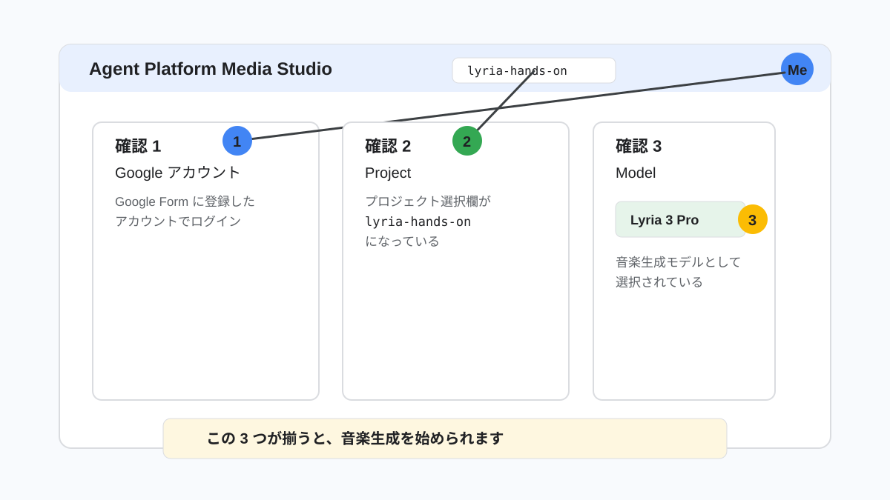
下のボタンから、イベント用プロジェクトを指定した Media Studio を開きます。
[Media Studio を開く](https://console.cloud.google.com/agent-platform/studio/media/music?project=lyria-hands-on)
画面が開いたら、右上のアカウントアイコンを確認します。Google Form に登録したアカウントでログインしていることを確認してください。
PC での参加を推奨します。スマートフォンで画面を確認する場合は、ブラウザのメニューからデスクトップ用サイトを表示します。
左から、Android Chrome、iPhone Safari の手順 1、手順 2、デスクトップ表示後の画面です。
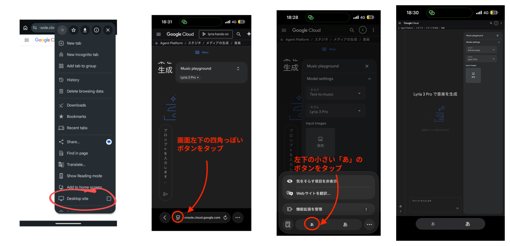
画面上部のプロジェクト選択欄で、プロジェクトが lyria-hands-on になっていることを確認します。
別のプロジェクトが表示されている場合は、プロジェクト選択欄を開き、lyria-hands-on を選びます。
Warning: このハンズオンでは、必ず lyria-hands-on プロジェクトを使います。自分のプロジェクトに切り替えて生成しないでください。
音楽生成の画面で、モデルとして Lyria 3 Pro を選択します。すでに選ばれている場合は、そのままで構いません。
症状 | よくある原因 | 対応 |
プロジェクトが見えない | メールアドレス未登録、または別アカウントでログインしている | アカウントを切り替える、またはメンターに声をかける |
権限エラーが出る | IAM 登録がまだ反映されていない | メンターに画面を見せる |
Lyria 3 Pro が見えない | 画面やモデル選択欄が更新されている | ページを再読み込みし、メンターに確認する |
Google Cloud の権限や画面表示の都合で Media Studio が使えない場合は、Gemini アプリの音楽生成からハンズオンを続けます。
Caution: Media Studio が開けた方は、このステップをスキップして「テキストから最初の曲を作る」へ進んでください。
下のボタンから Gemini アプリを開きます。Google Cloud で使う予定だった Google アカウントでログインしてください。
[Gemini アプリを開く](https://gemini.google.com/app)
入力欄の左にある + ボタンを押します。
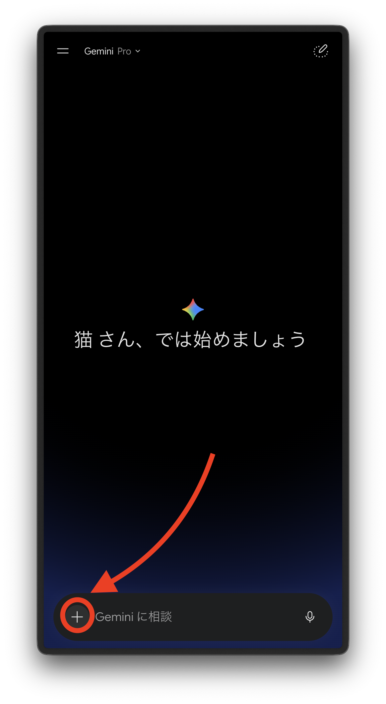
メニューが開いたら、音楽 を選びます。
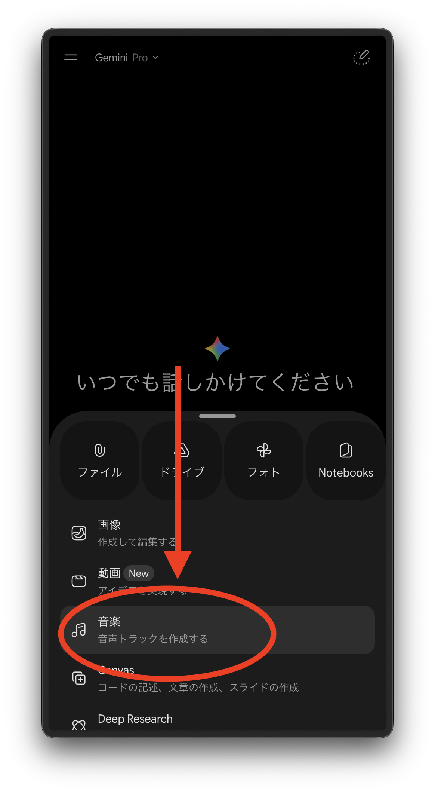
これ以降のプロンプトは、Media Studio の代わりに Gemini アプリの入力欄へ貼り付けて進めます。モデル選択やプロジェクト確認など、Google Cloud 固有の操作は行いません。
このステップでは、短いテキストだけで最初の曲を生成します。まずは細かく考えすぎず、1 回作って再生することを目標にします。
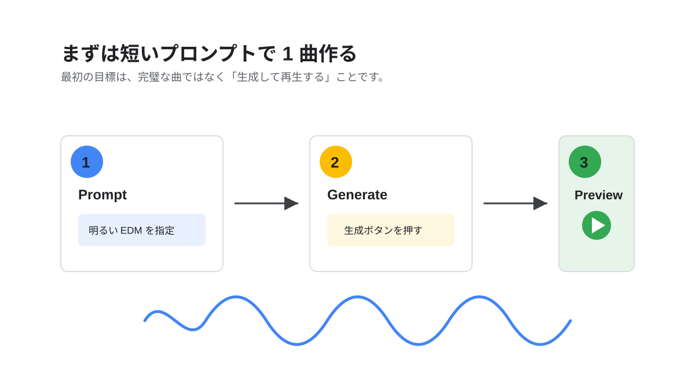
プロンプト入力欄に、次の英文を貼り付けます。
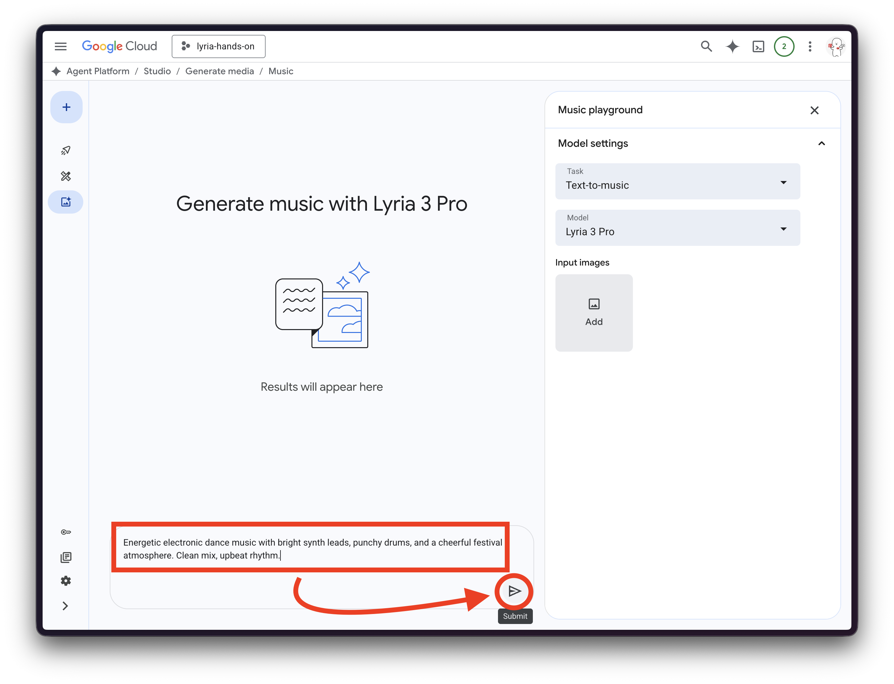
Energetic electronic dance music with bright synth leads, punchy drums, and a cheerful festival atmosphere. Clean mix, upbeat rhythm.
このプロンプトは、「明るいシンセ」「力強いドラム」「フェスのような雰囲気」を Lyria に伝えています。
生成ボタンを押し、結果が表示されるまで待ちます。生成が完了したら、再生ボタンを押して音を確認します。
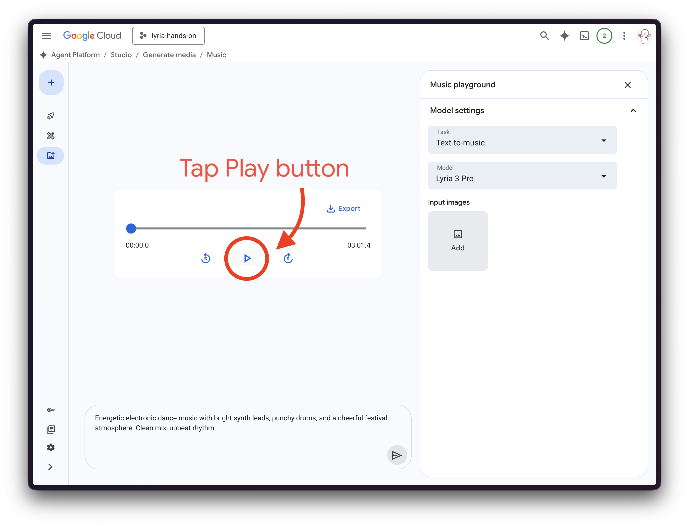
期待される結果:
音楽プレイヤーのような表示が出て、生成された曲を再生できます。最初の生成では、思った通りでなくても問題ありません。
再生したら、次の 3 点を心の中で確認します。
このあと、これらの要素をプロンプトで調整します。
このステップでは、短いプロンプトを「音楽の制作指示書」に変えて、生成結果をコントロールします。
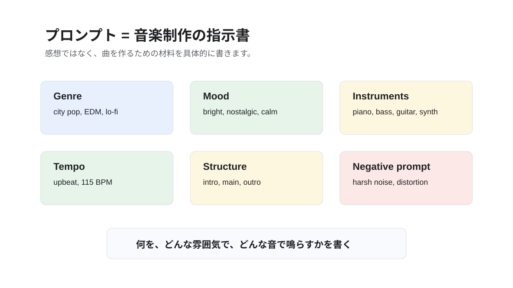
たとえば、次のようなプロンプトでも音楽は生成できます。
Cool pop music.
ただし、これだけでは「どんな pop なのか」「どんな楽器なのか」「速さはどれくらいか」が Lyria に伝わりにくくなります。
同じ pop でも、次のように要素を分けて書くと、曲の方向性を伝えやすくなります。
Modern city pop with nostalgic 80s synth textures.
Mood: bright, nostalgic, and relaxed.
Instruments: warm electric piano, slap bass, clean guitar, and disco-inspired drums.
Tempo: upbeat, around 115 BPM.
Structure: short intro, catchy main section, gentle outro.
Production: clean mix with soft reverb.
このプロンプトでは、ジャンル、雰囲気、楽器、テンポ、構成、音作りを分けて指定しています。
画面に Negative prompt の入力欄がある場合は、避けたい要素を書きます。
harsh noise, aggressive distortion, sudden volume changes
Negative prompt は「入れてほしくないもの」を伝える欄です。最初は短く、明確な言葉だけを書くのがおすすめです。
生成した曲を聴き、短いプロンプトとの違いを確認します。
指定した要素 | 変わりやすいところ |
Genre | 曲全体の方向性 |
Mood | 明るさ、落ち着き、緊張感 |
Instruments | 目立つ音色 |
Tempo | ノリや速さ |
Structure | 曲の展開 |
Production | 音の質感 |
Tip: 良いプロンプトは、感想文ではなく制作指示書です。「かっこいい曲」よりも、「何が、どんな速さで、どんな雰囲気で鳴るか」を書きます。
このステップでは、画像とテキストを組み合わせて、曲の世界観を伝えます。
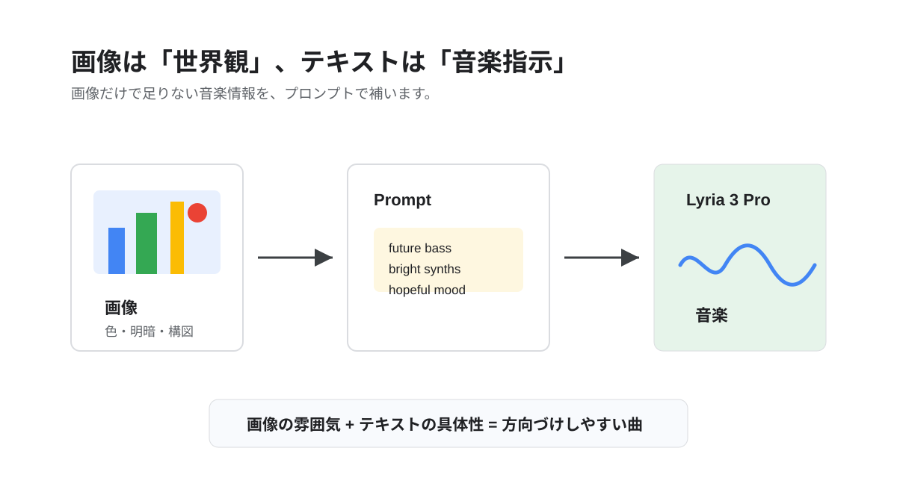
手元にある写真やイラストを 1 枚選びます。夜景、海、自然、部屋、イベント写真など、雰囲気が伝わりやすい画像が向いています。
手元に画像がない場合は、次のサンプル画像を使っても構いません。気になる画像を 1 枚選び、画像を見て感じた雰囲気をプロンプトに足してみます。
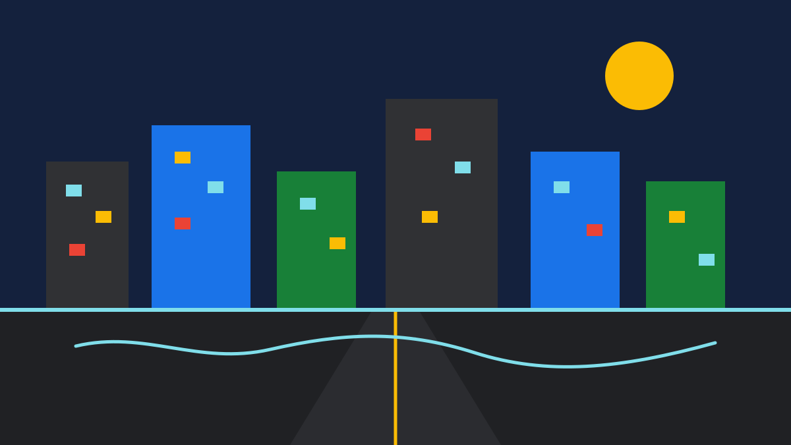
Jazz:
Warm jazz ballad in a small club. Upright bass, brushed drums, soft piano, and smoky saxophone. Relaxed late-night mood with intimate room ambience.
Orchestra:
Grand orchestral music inspired by a concert hall. Rising strings, warm brass, gentle woodwinds, and cinematic percussion. Elegant and emotional mood.
Sea:
Peaceful ambient music inspired by a calm morning sea. Soft piano, airy pads, gentle strings, and slow wave-like movement. Spacious and hopeful mood.
画像アップロード欄がある場合は画像を追加し、選んだ画像の下にあるプロンプト例をテキスト欄に入力します。自分の画像を使う場合は、次の例のように画像の雰囲気を短い英文で補います。
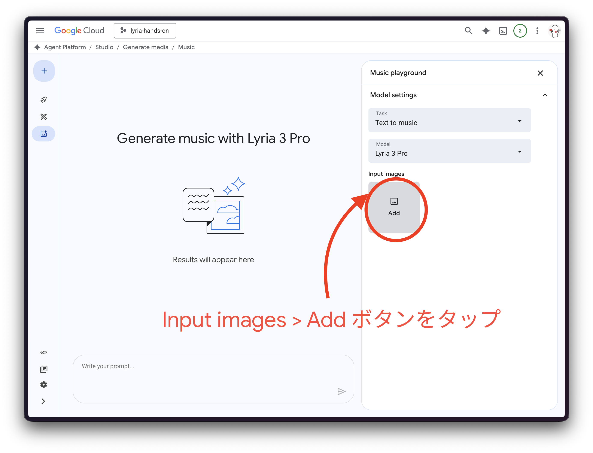
Emotional future bass inspired by neon city nightlife. Bright synth chords, soft vocal chops, deep bass, and a hopeful mood.
画像は色、明暗、構図、世界観を伝える材料になります。テキストでは、ジャンルや楽器など、画像だけでは分かりにくい音楽的な指示を補います。
生成ボタンを押して、画像なしで作った曲と聴き比べます。画像の雰囲気が曲にどのように反映されたかを確認します。
Troubleshooting: 画像アップロード欄が見つからない場合は、このステップをスキップして、テキストプロンプトだけで生成してください。画面の機能は更新されることがあります。
このコードラボでは、Lyria 3 Pro と Media Studio を使って、ブラウザだけで音楽生成を体験しました。
EDM:
Festival EDM with energetic synth leads, huge drops, punchy kick drums, and emotional chord progressions.
Lo-fi:
Relaxed lo-fi hip hop with dusty vinyl texture, mellow piano, soft drums, and rainy night atmosphere.
Cinematic:
Epic cinematic orchestral music with rising strings, deep percussion, and emotional brass swells.
Anime opening:
Emotional anime opening theme with fast drums, bright guitars, uplifting energy, and a dramatic chorus.
補足: 2026-05-23 時点で、Cloud の音楽生成ドキュメントには Lyria 2 / lyria-002 を中心とした説明も含まれています。このハンズオンでは、イベント用の Media Studio 画面に表示される Lyria 3 Pro を使います。